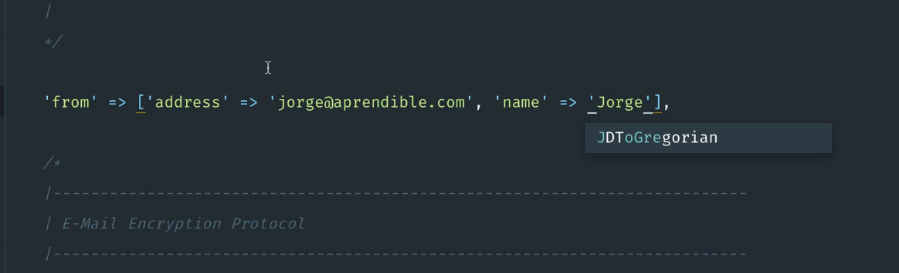
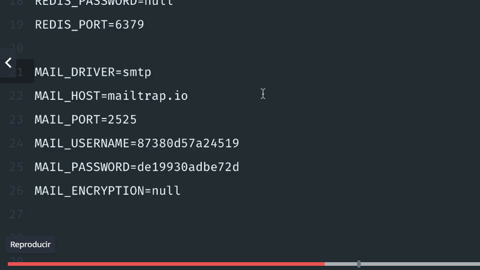
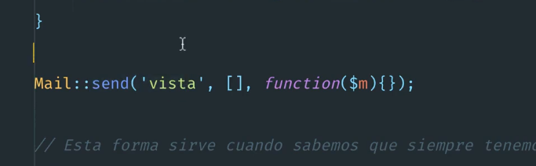
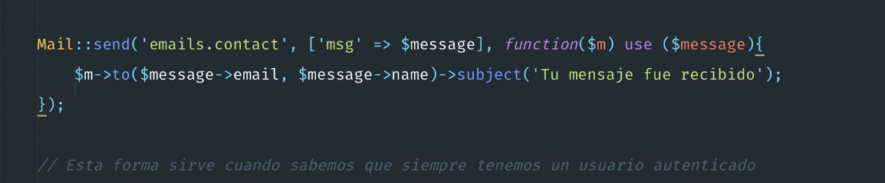
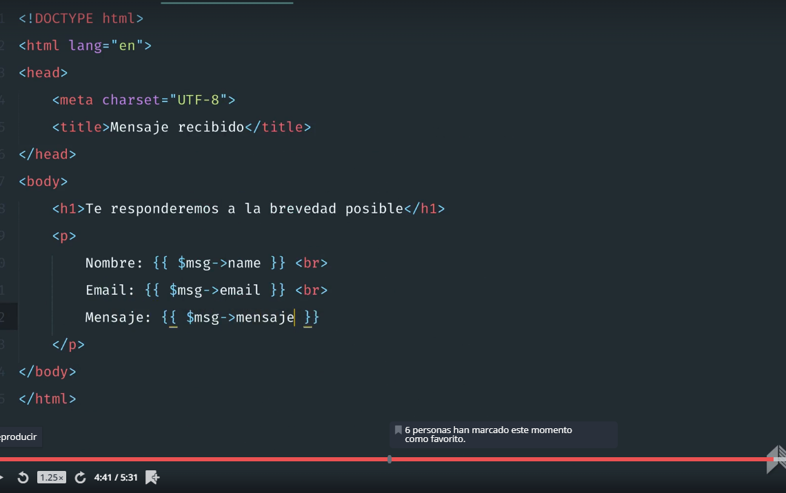
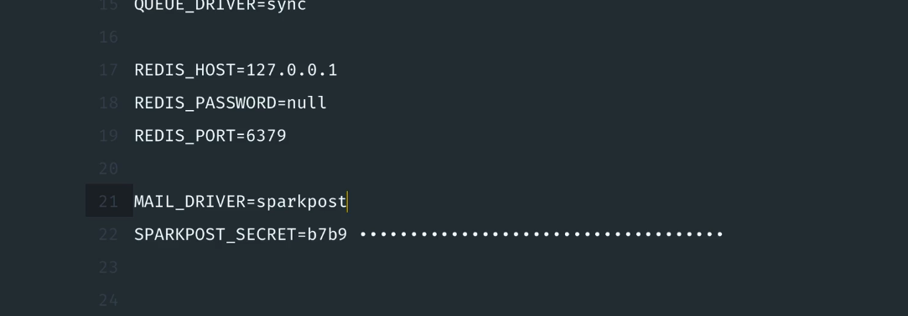

Manejo de Emails. 

Configurar el nombre he email base

mail.php 



Configurar mailtrap



Para enviar:

impormar la clase.

use Mail;

Recibe tres parametros la vista , el arreglo de datos y el mensaje. 




Se envia el email cargando los datos del mensaje se toman los valores de los campos 

$m->to($mmesage->email, $message->name)->subject('Tu mensaje fue recibido');



Mostrar mensaje vista blade.



#### ENTORNO DE PRODUCCIÓN. 

cuenta en SPARKPOST

Se configura las cuentas.



###################MUY IMPORTANTE OBTENER VALOR DE LA CONFIGURACION


